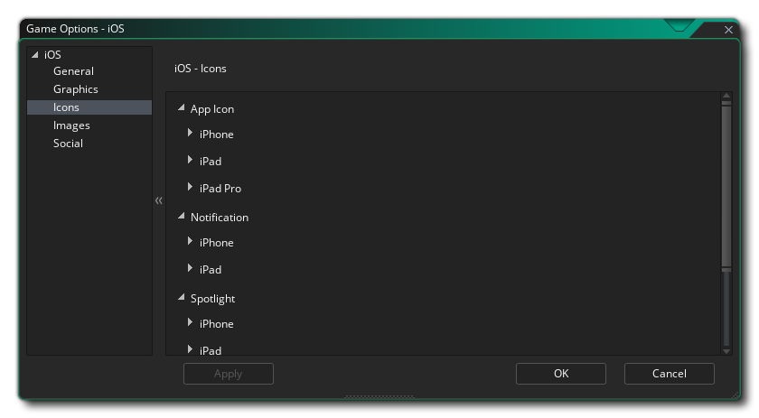

In diesem Abschnitt werden die verschiedenen verfügbaren Optionen beschrieben, die steuern, wie Ihre iOS-Spielprojekte kompiliert werden. Die verschiedenen Abschnitte sind:
Als erstes müssen Sie die Produktinformationen zu Ihrem Spiel ausfüllen, einschließlich des Anzeigenamens, der Bundle-ID und der Versionsinformationen. Beachten Sie, dass die Bundle-ID im richtigen umgekehrten URL-Format sein muss, damit der endgültige Build des Spiels ordnungsgemäß funktioniert. com.[Company].[GameName]
Der zweite Teil des Abschnitts "Allgemein" behandelt die Build-Einstellungen. Folgende Optionen stehen zur Verfügung, um festzulegen, welcher Gerätetyp ausgewählt werden soll:
- iPhone oder iPod Touch: iPhone 4 und höher oder iPod Touch-Geräte
- iPad: iPad-Geräte
- Beide: Sowohl iPhone / iPod und iPad
Sie können dann den Ordner " App-Ausgabe " für das Spiel und dann die verschiedenen Orientierungen auswählen, in denen Ihr Spiel für die beste Nutzererfahrung ausgeführt werden kann. Die verfügbaren Optionen sind:
- Porträt
- Gekipptes Portrait
- Landschaft
- Umgedrehte Landschaft
Hier können Sie die folgenden Details zur Anzeige Ihres Spiels mit den folgenden Optionen ändern:
- Interpolieren von Farben zwischen Pixeln: Schaltet die Interpolation ein, die Pixel im Grunde "glättet". Für knackige Pixelgrafiken sollte es ausgeschaltet sein, aber wenn Sie nette Alpha-Mischungen und geglättete Kantengrafiken haben, ist es besser, auf sie zu bleiben. Standard ist deaktiviert.
- Halbe iPad 1-Texturen: Das iPad 1 verfügt über wesentlich weniger Texturspeicher als neuere Geräte, sodass Sie diese Option aktivieren können, um die Größe von Texturen um die Hälfte zu verringern, wenn Sie dieses Gerät als Ziel verwenden oder maximale Kompatibilität erzielen möchten.
- Skalierung: Ihr Spiel kann so konfiguriert werden, dass der Zeichenbereich automatisch skaliert wird, um das Seitenverhältnis im Browser beizubehalten, oder Sie können auswählen, dass der Bereich gestreckt werden soll. Die Stretch-to-Fit-Option wird das Spiel im Browser nicht im Vollbildmodus anzeigen, sondern das, was gezeichnet wird, an die Leinwandgröße anpassen, wie sie im ersten Raum des Spiels definiert ist.
Schließlich gibt es noch die Möglichkeit, die Größe der Textur-Seite festzulegen. Die Standardgröße (und die meist kompatible) ist 2048x2048, aber Sie können zwischen 256x256 und 4096x4096 wählen. Es gibt auch eine Schaltfläche mit der Bezeichnung Vorschau, die die Strukturseiten für diese Plattform erzeugt und dann ein Fenster öffnet, damit Sie sehen können, wie sie aussehen. Dies kann sehr nützlich sein, wenn Sie sehen möchten, wie die Strukturseiten strukturiert sind und um zu verhindern, dass Strukturseiten größer (oder kleiner) als nötig sind.
HINWEIS: Beachten Sie, je größer die Texturseite ist, desto weniger kompatibel wird Ihr Spiel sein.

In diesem Abschnitt können Sie die verschiedenen Symbole hinzufügen, die für die verschiedenen Geräte und die verschiedenen Teile des iOS App Stores erforderlich sind. Diese Icons sollten als 24bit erstellt werden .png Bilder in der für jeden einzelnen angegebenen Größe.
Es ist erwähnenswert, dass GameMaker Studio 2 ein Project Image Generator- Tool enthält, mit dem automatisch alle Icons erstellt werden können, die für die verschiedenen Zielplattformen benötigt werden, auf denen das Spiel kompiliert wird. Wenn Sie dieses Tool verwenden, sollten Sie die erstellten Bilder überarbeiten, um sicherzustellen, dass sie Ihren Anforderungen entsprechen.
In diesem Abschnitt können Sie separate Grafiken als Begrüßungsbildschirme (das Bild, das beim Laden Ihrer App kurz angezeigt wird) für jedes der verschiedenen iOS-Zielgeräte hinzufügen. Diese Bilder müssen als individuelle 24bit *.png-Bilder ohne Transparenzen und in der richtigen Größe für jedes der benötigten Geräte und Orientierungen erstellt werden. Sie können auch eine Mindestzeit für das Anzeigen der Begrüßungsbildschirme im Dropdown-Menü unten (von 0 bis 10 Sekunden) festlegen.
Es ist erwähnenswert, dass GameMaker Studio 2 ein Project Image Generator- Tool enthält, mit dem automatisch alle Bilder erstellt werden können, die für die verschiedenen Zielplattformen benötigt werden, auf denen das Spiel kompiliert wird. Wenn Sie dieses Tool verwenden, sollten Sie die erstellten Bilder überarbeiten, um sicherzustellen, dass sie Ihren Anforderungen entsprechen.
In diesem Abschnitt können Sie verschiedene soziale Funktionen in Ihrem Android Spiel aktivieren. Folgende Optionen können gewählt werden:
- Facebook: Wenn Sie die Facebook-Funktionen benötigen, müssen Sie dieses Kontrollkästchen aktivieren und dann die Facebook-App-ID und den Facebook-App-Namen angeben. Beachten Sie, dass auf alle Facebook-Funktionen über eine Durchwahl zugegriffen wird. Wenn Sie das Kontrollkästchen Facebook verwenden aktivieren, werden Sie aufgefordert, die Facebook-Erweiterung vom Marktplatz herunterzuladen und zu installieren.
- Push-Benachrichtigungen aktivieren: Damit Ihr Spiel Push-Benachrichtigungen verwenden kann, müssen sie hier zuerst aktiviert werden, sonst funktionieren sie nicht. Für lokale Benachrichtigungen unter Android keine "GCM Sender ID" erforderlich, Sie müssen sie jedoch hinzufügen, wenn Sie Remote-Benachrichtigungen erstellen möchten.